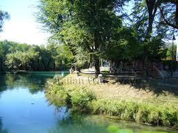
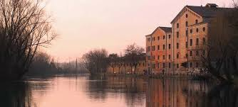
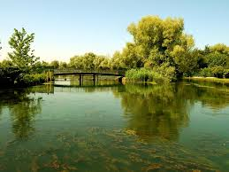
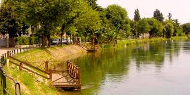

Il Nome
Il Sile (Sil /'sil/ o Sile /'sile/ in veneto) e un fiume di risorgiva del Veneto.
Percorso
Nasce da varie risorgive, distribuite tra Casacorba di Vedelago (TV) e Torreselle di Piombino Dese (PD); il fontanasso dea Coa Longa, considerato la sorgente principale, si trova nel territorio di quest'ultima. Scorre con una certa sinuosita da ovest verso est e, una volta bagnato il capoluogo della Marca, piega in direzione sud-est verso la Laguna Veneta. Un tempo sfociava a Portegrandi di Quarto d'Altino, ma nel 1683 la Serenissima ne devia il corso tramite il canale Taglio del Sile, che ne trasferisce le acque sul vecchio letto del Piave, a sua volta deviato piu ad est (per cui l'ultimo tratto viene detto anche Piave Vecchia). Sfocia infine nell'Adriatico, andando a dividere il Lido di Jesolo dal Litorale del Cavallino (porto di Piave Vecchia). A Portegrandi, comunque, il vecchio corso e ancora seguito da una diramazione, detta Silone, che d? accesso alla Laguna (il traffico nautico e regolato da chiuse). Il Silone procede tra le paludi ed e prolungato dal canale dei Borgognoni-canale di Burano, il quale conduce al canale di Treporti e, infine, al porto del Lido. L'intero corso e protetto dal Parco naturale regionale del Fiume Sile. Per quanto riguarda i consorzi di bonifica, il suo bacino idrografico e suddiviso tra il Piave e il Acque Risorgive.
Caratteri Tecnici
Lunghezza: 90,49 km; Larghezza max: 60 m; Portata (a medio corso): min 40 m/s, med 65 m/s, max 90 m/s; Velocit?: 2 m/s; Temperatura dell'acqua: invernale + 9/10 C, estiva + 16/17 C; Bacino idrografico: 628 km; Affluenti di destra: Piovega, Dosson, Bigonzo, Serva; Affluenti di sinistra: Corbetta, canale di Gronda, Cerca, Botteniga, Limbraga, Storga, Melma, Nerbon, Musestre.
Origine Nomi
Il corso d'acqua e citato per la prima volta nel terzo libro della Naturalis historia di Plinio il Vecchio (Silis); qualche secolo dopo compare nella Cosmografia ravennate (Sile). Secondo Bartolomeo Burchiellati, l'idronimo deriva dal latino silens "silenzioso", in riferimento alle acque tranquille del fiume[3]. Studi piu recenti lo avvicinano a un probabile termine prelatino (*sila) con il significato di "canale", o altrimenti alla radice indoeuropea *sel- "sprizzare", "scaturire".
Mulini
Il Sile e alcuni suoi affluenti, per la loro portata costante, sono sempre stati ideali per l'insediamento
di mulini. Ancora nel XIX secolo nella sola Treviso se ne contavano sessantuno.
Attualmente nessun mulino sfrutta pi? le acque del fiume, ma molti sopravvivono come pregevoli esempi di
archeologia industriale.
Visualizza maggiori informazione sui mulini